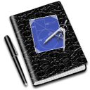

<nav class="navbar navbar-inverse fixed-top metodist-navbar metodist-navbar-top">
  <div class="col-sm-12 align-middle">
    
    <span class="application-title">Методист 1.0</span>
  </div>
</nav>

<div ng-cloak class="main-sidenav">
  <button class="perspective-button"
          ng-class="{'selected-main-button' : btn.id == main.currentPerspective}"
          ng-repeat="btn in main.perspectives"
          ng-click="main.loadPerspective(btn)">
    
    <span class="perspective-button-name">{{btn.name}}</span>
  </button>
</div>

<div class="main-content" ui-view="entity"></div>

<nav class="navbar navbar-inverse fixed-bottom metodist-navbar metodist-navbar-bottom">
  <div class="col-sm-12 align-middle">
    &copy; 2018, Хаецкий А.В.
  </div>
</nav>


